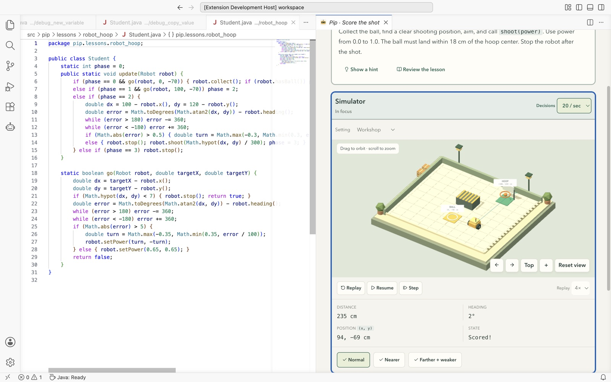
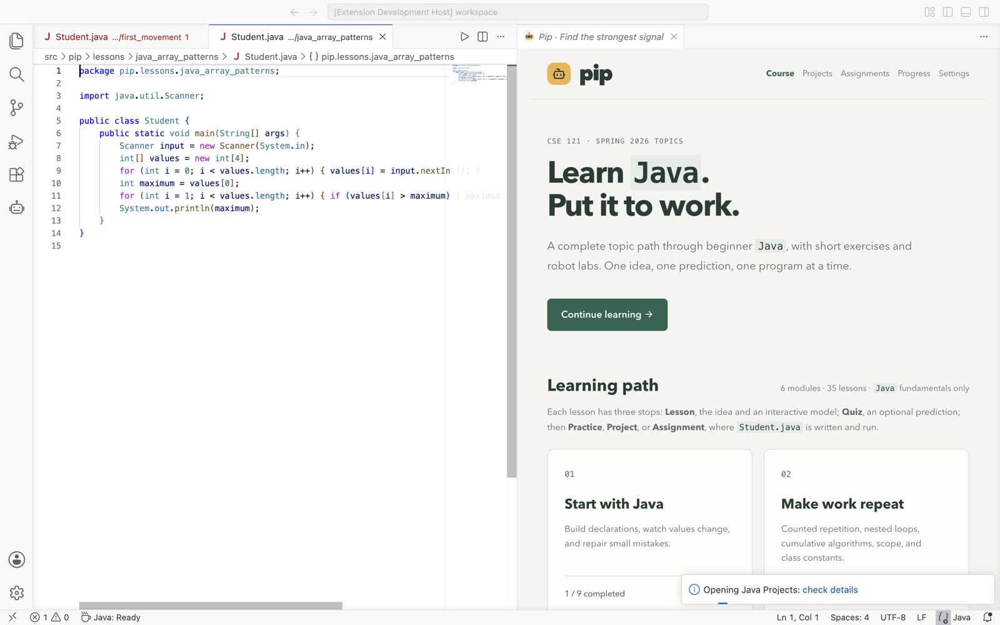
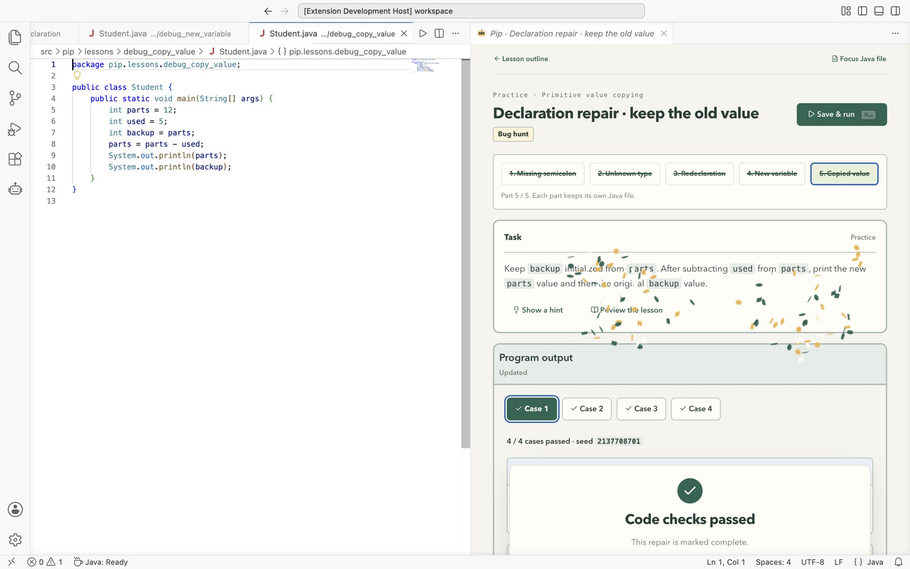

Desktop app for Mac · free
Learn beginner Java in one small app: explore an idea, answer a prediction quiz, then write real code in a built-in editor, checked automatically and run to see the result. Java is included; nothing else to install.
Download Pip Workshop 0.7.0 for Mac30 MB · Apple silicon (M1 or newer) · Java included
xattr -cr "/Applications/Pip Workshop.app", then open the app again. This clears the download mark; Pip is safe to open..pip-java folder in the home folder.To update, download the newest installer and drag it into Applications again, replacing the old copy. Code and completed lessons stay in .pip-java, so earlier progress stays checked off.
Student.javaEach unit runs that loop in a built-in Java editor with live error underlines, code suggestions, automated checks, plain-language error notes, and output graphics or a 3D robot replay. Three robot projects close out the course: an obstacle detour, a cargo delivery, and a hoop shot. 35 learning units, 39 coding parts (30 console, 9 robot), across six modules:



Before Pip Workshop, this site hosted weekly Java notes with downloadable starter zips. Those pages remain available: